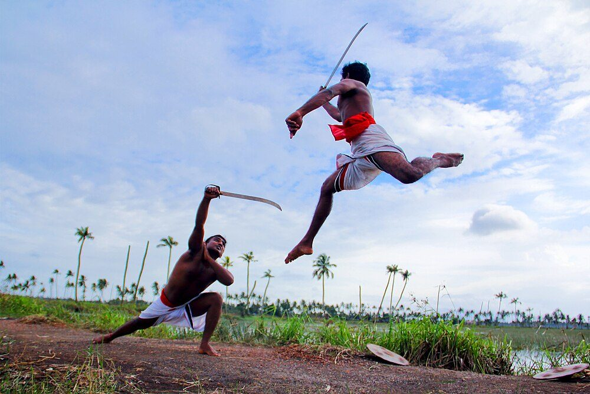

Chapter 15: Kaḷarippayaṟṟu, Silambam, Gatka and Other Regional Martial Arts¶
15.1 Introduction¶
India has a great variety of regional martial arts: systems of training in the use of weapons and the body, transmitted from teacher to student, often with their own rituals, medical knowledge and social settings. Some, such as kaḷarippayaṟṟu in Kerala, silambam in Tamil Nadu and gatka among the Sikhs of Punjab, are now widely known; others, such as the paika exercises of Odisha or the pari-khaṇḍā of Bihar, survive in local festivals and performance.
Writing about these arts faces two difficulties. The first is evidence: most of them are documented in detail only from the nineteenth and twentieth centuries, and their earlier history must be reconstructed from scattered references. The second is the weight of modern claims. Since the late twentieth century these arts have been promoted as national heritage, as sports, as tourist spectacles and as wellness practices, and their promoters often claim for them great antiquity and unique powers. This chapter tries to describe each art as it is practised, to set out what is known of its history, and to identify claims that go beyond the evidence. It describes techniques in general terms only; it is not a manual.
15.2 Kaḷarippayaṟṟu¶
15.2.1 Name and history¶
Kaḷarippayaṟṟu (often written kalaripayattu) takes its name from the Malayalam kaḷari, a training ground, and payaṟṟu, exercise or practice. It is the martial art of Kerala, historically practised by the Nāyar warrior communities who served the rulers and chiefs of the Kerala coast, and also by some Christian, Muslim and other groups, including the Tiyya (Īḻava) community in the north.
The tradition of kaḷarippayaṟṟu attributes its origin to Paraśurāma, the axe-wielding avatar of Viṣṇu, who in Kerala legend reclaimed the land from the sea and established 108 kaḷaris to teach the art; other lineages trace it to the sage Agastya. These are origin myths. Phillip Zarrilli’s historical study argues that kaḷarippayaṟṟu developed its characteristic form in the period of the wars between the Cēra kingdom of Mahodayapuram and the Cōḻas in the eleventh century and the subsequent fragmentation of Kerala among many small principalities, each relying on Nāyar retainers trained in local kaḷaris; the art as we know it is documented from about the twelfth century onwards (Zarrilli 1998). The claim, common in popular writing, that kaḷarippayaṟṟu is “the oldest martial art in the world” or “the mother of all martial arts” has no historical basis.
Portuguese writers of the early sixteenth century, notably Duarte Barbosa, described the training of Nāyar boys, who from about the age of seven were placed under masters to learn the use of weapons and to make their bodies supple (Zarrilli 1998). The north Kerala ballads of the following centuries are discussed in Section 15.3.
15.2.2 The kaḷari¶
A traditional kaḷari is a rectangular area, often sunk below ground level and roofed, oriented east–west. In its south-west corner stands a seven-stepped altar (pūttaṟa) dedicated to the guardian deity of the kaḷari, frequently a form of the goddess; other deities and the lineage’s past masters are honoured at other points. Students begin and end each session with salutations to the deities, the earth and the master (gurukkaḷ). The kaḷari is thus a sacred space as well as a gymnasium (Zarrilli 1998).
15.2.3 The training¶
Training traditionally proceeds through stages:
-
Body exercises (meyppayaṟṟu): sequences of kicks, steps, jumps, turns and poses (vaṭivu), several of them named after animals such as the elephant, horse, lion, boar, serpent, cat, cock and fish, designed to make the body supple, strong and balanced. Zarrilli emphasises that their aim is a state in which “the body becomes all eyes”, fully aware and responsive.
-
Wooden weapons (kōlttāri): the long staff, the short stick, and the curved stick (ottakkōl), which in some lineages is associated with training in vital points.
-
Metal weapons (aṅkattāri; Figure 15.1): dagger, sword and shield, spear, and the flexible sword (uṟumi), a long, thin, flexible blade that is coiled when not in use.
-
Empty-hand techniques (verumkai), often taught last, to advanced students.
Two broad styles are usually distinguished: the northern style (vaṭakkan) of Malabar, with its emphasis on body exercises and weapons, and the southern style (teṟkan) of the old Travancore region, closer to the Tamil arts of varmakkalai and with more emphasis on empty-hand techniques; there are also intermediate traditions. Lineages differ considerably.


15.2.4 Healing and vital points¶
A distinctive feature of kaḷarippayaṟṟu is its association with healing. The traditional master was also a physician, who treated injuries with massage, medicated oils and knowledge of the vital points (marmmam). Students undergo oil massage (uḻiccil), often during the monsoon season, to make the body supple; in some lineages the master massages with his feet while holding a rope for balance. Knowledge of the vital points, believed to allow both disabling an opponent and healing, was guarded and taught only to trusted students (Zarrilli 1998). As explained in Chapter 14, these are traditional systems whose therapeutic claims have not been established by clinical research.
15.2.5 Decline and revival¶
Kaḷarippayaṟṟu declined in the late eighteenth and nineteenth centuries, as the Kerala principalities were absorbed by Mysore and then by the British, and the military role of the Nāyars ended. The disarming of Malabar after the revolt of Pazhassi Raja (suppressed in 1805), colonial restrictions on carrying weapons, and the social changes that broke up the Nāyar joint family all contributed. Some writers state that the British formally banned kaḷarippayaṟṟu; the evidence is better described as the collapse of its military function together with restrictions on arms.
The revival began in the 1920s in north Kerala, as part of a wider interest in Indian physical culture. C. V. Narayanan Nair (d. 1944), a student of Kottakkal Kaṇāran Gurukkaḷ, did much to popularise the art through public demonstrations, and his students later founded the C.V.N. Kalari in Thiruvananthapuram. A Kerala Kalarippayattu Association was formed in the late 1950s. Since the 1970s, kaḷarippayaṟṟu has influenced Indian and international theatre and dance — Zarrilli himself used it in actor training — and Indian cinema, and it has become a competitive sport with standardised events.
15.3 Duels, Champions and Ballads in Kerala¶
The north Kerala ballads (vaṭakkan pāṭṭukaḷ) give a picture of the social world of kaḷarippayaṟṟu in the sixteenth to eighteenth centuries. In this world, disputes between chiefs could be settled by a formal duel (aṅkam) fought to the death by champions on a specially built platform, after elaborate preparations and negotiations; the champions were often men of the Tiyya community known as cēkavar, trained in the kaḷari and hired for the purpose. The ballads tell of heroes such as Ārōmal Cēkavar and Tacchōḷi Ōtēnaṉ, and of the woman warrior Uṇṇiyārcca, famous for her skill with the flexible sword, who appears in the ballads as a bold and witty heroine. Zarrilli discusses these ballads as evidence for the practice and ideals of the kaḷari in the period before colonial rule (Zarrilli 1998). They became immensely popular in the twentieth century through Malayalam films based on their stories.
A form of judicial combat, in which the outcome of a duel decided a dispute, is also recorded elsewhere in medieval India, but the Kerala aṅkam is the best documented. It reflects a society in which political authority was fragmented among many chiefs, each with his own retainers, and in which professional fighters could sell their skills.
15.4 Women in Kaḷarippayaṟṟu¶
The ballads show women trained in the kaḷari, and Portuguese and later observers mention women’s martial training among some Kerala communities. In the twentieth-century revival women took up the art in growing numbers, and some became masters. Meenakshi Amma of Vatakara, who learned kaḷarippayaṟṟu as a child and has taught it for decades, was awarded the Padma Shri, one of India’s highest civilian honours, in 2017, in recognition of her role in preserving and teaching the art. Women’s participation has made the art more widely accessible, though in some lineages the most advanced and secret knowledge was traditionally restricted.
15.5 Myths of the Flexible Sword¶
The flexible sword (uṟumi) of Kerala, a long, thin, flexible steel blade that can be coiled like a belt, has attracted much exaggeration. Popular accounts claim that it was the ultimate weapon of Kerala’s warriors, that it could be used against many opponents at once, or that it was a secret weapon of assassins. In fact, the uṟumi was a specialised weapon, difficult to master and dangerous to its user, taught only to advanced students in some lineages; its effectiveness in battle, against armoured opponents or in the press of a crowded fight, is doubtful. Multi-bladed versions, now popular in demonstrations, are of uncertain antiquity. The uṟumi is best understood as a weapon of display and of the individual duel, whose dramatic appearance has made it a favourite of demonstrations and films, rather than as a weapon of war.
15.6 Silambam and the Tamil Martial Arts¶
15.6.1 Silambam¶
Silambam (cilampam) is the staff-fighting art of Tamil Nadu. The practitioner wields a bamboo staff, usually reaching to about the forehead, in rapid circular and figure-of-eight movements, combined with footwork patterns, to strike, block and disarm. The art also includes training with other weapons, such as the short stick, the paired deer-horns (māṭu) and the sword. Tamil tradition traces silambam to the Caṅkam period and to the sage Agastya, and points to references in early Tamil literature to staves and to martial training; but the specific art, with its terminology and forms, is documented mainly from later centuries, and its earlier history is uncertain.
Silambam was practised especially among the Kaḷḷar, Maṟavar and other communities of southern Tamil Nadu who served the Pāṇḍya, Nāyaka and Maṟavar rulers and the pāḷaiyakkārar (poligars), local military chiefs, whose wars with the East India Company are described in Section 15.7. Tamil migrants carried silambam to Malaysia and Sri Lanka, where it is also practised. In the twentieth century silambam was organised as a sport, with federations and competitions.
15.6.2 Kuttu varisai and varmakkalai¶
Kuttu varisai is an unarmed art associated with silambam. Varmakkalai (“the art of vital points”) is a tradition of combat and healing found especially in the far south of Tamil Nadu, in Kanyakumari district, and connected with the Siddha medical tradition. Its practitioners attribute it to the sage Agastya and maintain texts, mostly in Tamil verse, on the vital points (varmam), their locations, the effects of striking them and the means of reviving a person struck. The same caution applies here as to kaḷarippayaṟṟu: the healing claims of varmam therapy are traditional and have not been validated by clinical research.
15.7 The Poligars and the Tamil Martial Tradition¶
In southern Tamil Nadu the pāḷaiyakkārar (poligars), local chiefs who held fortified villages and territories under the Nāyakas of Madurai and their successors, maintained bands of armed retainers drawn largely from the Maṟavar, Kaḷḷar and related communities, trained in the use of the staff, spear, sword and musket. In the late eighteenth century the East India Company, acting at first for the Nawab of Arcot, sought to collect revenue from them and to dismantle their forts. The resulting poligar wars ended with the defeat and execution of Vīrapāṇḍiya Kaṭṭabomman of Panchalankurichi in 1799 and the suppression of a wider rising led by the Marutu brothers of Sivaganga in 1801. The Company then destroyed the poligars’ forts and disarmed their followers. These events, celebrated in Tamil ballads and later in films, are part of the background to the decline of the Tamil martial arts and to their later revival as symbols of Tamil identity.
15.8 Gatka and the Sikh Martial Tradition¶
15.8.1 Gatka¶
Gatkā originally referred to a form of stick-fencing, in which the players use a wooden stick (soṭī) and a small shield (phari) to practise sword technique. It became associated above all with the Sikhs, whose martial tradition began with Guru Hargobind in the early seventeenth century and was formalised with the creation of the Khalsa by Guru Gobind Singh in 1699 (Chapter 9). Today gatka is practised in Punjab and in the Sikh diaspora as a display art, performed at religious festivals and processions with swords, sticks, spears and the throwing quoit (cakkar), and as a competitive sport with rules and federations (Grewal 1990).
15.8.2 The Nihangs and “shastar vidya”¶
The Nihangs (also called Akālīs) are an order of Sikh warriors, distinguished by their blue robes, tall turbans and the weapons they carry, often including steel quoits (cakkar) worn on the turban. They trace their origin to the time of Guru Gobind Singh, and they formed a fighting force in the Sikh armies of the eighteenth and early nineteenth centuries. European observers in the nineteenth century described Akālī warriors throwing the steel quoit with considerable range and accuracy (Egerton 1880). Today the Nihangs are prominent at the Hola Mohalla festival at Anandpur, held the day after Holī, with its displays of horsemanship and arms.
In recent decades some teachers, notably Nidar Singh Nihang, have presented an art they call shastar vidiā (“science of weapons”) as an older and more complete Sikh martial system, distinct from the sporting gatka; Nidar Singh and Parmjit Singh have also written on the Sikh community of Hazur Sahib in Nanded, where old Sikh martial and ritual practices survive (Singh and Singh 2008). The history and status of this system are debated within the Sikh community and among scholars, and its claims to represent an unbroken pre-modern tradition are difficult to verify.
15.9 The Akālīs in the Sikh Kingdom¶
The Akālīs or Nihangs played a distinctive part in the Sikh kingdom of Ranjit Singh. They were irregular warriors, fiercely independent and devoted to the Khalsa, who acknowledged no authority but the Guru and the Panth; their leader in Ranjit Singh’s time, Akālī Phūlā Siṅgh (d. 1823), was the custodian of the Akal Takht at Amritsar and on occasion rebuked the Maharaja himself for breaches of Sikh conduct. The Akālīs fought as shock troops in Ranjit Singh’s campaigns against the Afghans, and Phūlā Siṅgh was killed leading an assault at the battle of Nowshera in 1823. British observers of the Sikh kingdom regarded the Akālīs as the most fanatical and the most dangerous of the Sikh soldiers (Grewal 1990; Cunningham 1849).
15.10 Huyen Langlon (Thang-ta) of Manipur¶
The Meitei of the Manipur valley have a martial tradition called huyen langlon, which includes an armed art, thang-ta (“sword and spear”), and an unarmed art, sarit sarak. Thang-ta is practised with sword, spear and shield, both in combat forms and in ritual and dance forms, and it is closely associated with Meitei religion and with festivals such as Lai Haraoba. The arts declined after the kingdom came under British control in 1891 (Section 15.11); they were revived in the twentieth century and today have competitive forms and organisations. Manipur also has its own wrestling, mukna (Chapter 14).
15.11 The Meitei Kingdom and Its Warriors¶
The Meitei kingdom of the Manipur valley had a long military history. Its chronicles record wars with the Shan states and with Burma, and in the eighteenth century, under kings such as Garib Niwaz (r. 1709–1748), Manipuri cavalry raided deep into Burma. In the early nineteenth century Burma conquered Manipur, and the period of Burmese occupation (1819–1825), remembered in Manipur as the “seven years’ devastation”, drove much of the population into exile. Gambhir Singh, a Manipuri prince, raised a force known as the Manipur Levy with British support and recovered the kingdom during the first Anglo-Burmese war (1824–26). In 1891, after a succession dispute and the killing of British officials, a British expedition defeated the Manipuri forces at the battle of Khongjom, which is commemorated in Manipur, and the kingdom came under British control. The martial arts of Manipur — thang-ta, sarit sarak and mukna wrestling — were part of the training of the kingdom’s soldiers, and their twentieth-century revival was linked to the assertion of Meitei identity.
15.12 Other Regional Arts¶
15.12.1 Maharashtra: mardānī khel¶
Mardānī khel (“manly games”) is the name now given to the weapon arts of Maharashtra, associated with the Maratha military tradition. They include the use of the gauntlet sword (paṭā), the stick (lāṭhī), the vīṭā (a short spear attached to a cord, which can be thrown and pulled back) and other weapons, practised in the tālīms and at festivals, especially in Kolhapur. In the twentieth century, physical culture institutions in Maharashtra and Baroda documented and taught these arts (Mujumdar 1950).
15.12.2 Odisha: the paika¶
The paikas were the peasant militia of the kingdom of Khurda in Odisha, who held land in return for military service. In 1817, after the British annexation of Khurda and the loss of their lands, the paikas rose in revolt under Bakshi Jagabandhu Bidyadhar; the rising was suppressed, but it is remembered in Odisha as an early revolt against British rule. The paika akhāḍās preserve their martial exercises and displays with sword, shield and stick, performed to drums.
15.12.3 Bengal: lāṭhi khelā¶
Lāṭhi khelā, stick-fighting with the bamboo staff (lāṭhi), was widely practised in rural Bengal, where landlords employed armed retainers (lāṭhiyāl). In the early twentieth century nationalists, including Sarala Devi Chaudhurani and members of revolutionary societies such as the Anushilan Samiti (founded in 1902), promoted stick-fighting and physical culture as means of building courage and strength among young men, in reaction to colonial stereotypes of the “effeminate” Bengali (Chapter 19).
15.12.4 Bihar and Jharkhand: pari-khaṇḍā¶
Pari-khaṇḍā is a sword (khaṇḍā) and shield (pari) art of Bihar and Jharkhand. Its movements are closely related to the Chhau dance of Seraikela and the surrounding region, in which dancers perform martial themes; the relationship between martial training and performance here, as in Kerala and Manipur, is close.
15.12.5 Kashmir: sqay¶
Sqay is a sword-and-shield fencing art from Kashmir, organised as a modern sport with a national federation since the late twentieth century. Its promoters describe it as an ancient Kashmiri art; its earlier history is not well documented.
15.13 Other Arms Traditions¶
Many other regional arms traditions deserve mention, though their histories are less fully documented.
-
In Andhra Pradesh and Telangana, kaṟṟa sāmu (stick exercise) and katti sāmu (sword exercise) were taught in village gymnasia and displayed at festivals.
-
In Tamil Nadu, besides silambam, there are traditions of exercise with heavy clubs (kaṟlakkaṭṭai) and of the deer-horn weapon (māṭu); aṭimuṟai, an unarmed art of the far south, is related to varmakkalai.
-
In Himachal Pradesh, ṭhoḍā is a ritual archery game in which teams of archers shoot blunt-headed arrows at the legs of their opponents, accompanied by dancing and music, at village festivals.
-
In Assam and the north-east, many hill communities had their own traditions of sword and spear fighting, often expressed in war dances that survive today as cultural performances (Chapter 13).
15.14 Martial Arts and Performance¶
In many parts of India martial training and performance were closely connected. In Kerala, the training of actors in the dance-drama kathakaḷi uses intensive body exercises and oil massage similar to those of the kaḷari, and many early kathakaḷi actors came from families with martial traditions. In the twentieth century Indian and international theatre makers drew on kaḷarippayaṟṟu: Phillip Zarrilli developed a method of actor training based on it, and the dancer Chandralekha incorporated its movements into contemporary dance. In eastern India the masked chhau dances of Purulia, Seraikela and Mayurbhanj draw on martial movements and themes, and their training includes exercises related to sword-and-shield play. In Manipur, the martial and the ritual are intertwined in the dances associated with Meitei religion. These connections show that the boundary between martial art and performing art was always permeable, and they help explain why many martial traditions survived as performance after their military functions disappeared.
Table 15.1 summarises the principal regional martial arts discussed in this chapter and in Chapter 14. The “documented from” column gives the period from which the art, in a recognisable form, is attested in dated sources; many practitioners claim much greater antiquity.
| Art | Region | Characteristic practices | Documented from |
|---|---|---|---|
| Kaḷarippayaṟṟu | Kerala | Body exercises, wooden and metal weapons, empty hand, vital points, massage | c. 12th c.; detailed 16th c. onwards |
| Silambam | Tamil Nadu | Bamboo staff, footwork, other weapons | Mainly early modern; modern sport |
| Varmakkalai | Southern Tamil Nadu | Vital points in combat and healing | Tamil texts of uncertain date |
| Kuśtī | North and west India | Wrestling in the earthen pit; exercises | Medieval (Mānasollāsa); Persian influence |
| Vajramuṣṭi | Gujarat, Karnataka | Combat with a knuckle-weapon | Medieval; rare today |
| Mallakhamb | Maharashtra | Pole and rope gymnastics | Early 19th c. (tradition) |
| Gatka | Punjab | Stick and shield; weapon displays | 18th–19th c.; modern sport |
| Thang-ta, sarit sarak | Manipur | Sword, spear and shield; unarmed | Pre-colonial kingdom; revived 1950s |
| Mukna | Manipur | Belt wrestling | Pre-colonial; festival sport |
| Inbuan | Mizoram | Wrestling within a circle | Traditional; documented 20th c. |
| Mardānī khel | Maharashtra | Gauntlet sword, vīṭā, stick | Maratha period (tradition) |
| Paika akhāḍā | Odisha | Sword, shield and stick exercises | Khurda kingdom; rising of 1817 |
| Lāṭhi khelā | Bengal | Stick fighting | 19th–20th c.; nationalist clubs |
| Pari-khaṇḍā | Bihar, Jharkhand | Sword and shield; linked to Chhau | Traditional |
| Sqay | Kashmir | Sword-and-shield fencing | Organised as a sport, late 20th c. |
| Ṭhoḍā | Himachal Pradesh | Ritual archery game | Traditional festival game |
| Kabaḍḍī | South Asia | Team game of tag and wrestling | Rules standardised 1950s |
15.15 Teachers, Lineages and the Transmission of Skill¶
The martial arts of India were transmitted, like many other crafts, from teacher to pupil within lineages. In Kerala the teacher of kaḷarippayaṟṟu is the gurukkaḷ or āśān; in the akhāṛā of north India the wrestlers’ teacher is the guru or ustād; in the Sikh tradition the teacher of gatkā is often called ustād as well. In each case the relationship is personal and hierarchical. The pupil is admitted after a ritual of entry, owes the teacher obedience and gifts, and learns by imitation and repetition under the teacher’s eye rather than from written instruction (Zarrilli 1998; Alter 1992).
Lineage gave each tradition its identity. In Kerala, Zarrilli distinguishes northern, central and southern styles of kaḷarippayaṟṟu, which differ in their forms, weapons and emphasis, and within each style there are the particular lineages of individual kaḷaris, each claiming descent from a founding master (Zarrilli 1998). In north India wrestlers identify themselves with the akhāṛā in which they trained and the guru who trained them, and rival akhāṛās compete for prestige. Such lineages preserve knowledge, but they can also restrict it: teachers have often kept the most valued techniques, or the knowledge of healing and vital points, for a few trusted pupils.
Some lineages kept written texts. Kerala families of teachers hold palm-leaf manuscripts in Malayalam that record sequences of movement, lists of vital points and recipes for medicines; in Tamil Nadu, texts on varmam circulate among practitioners. These manuscripts are usually brief and allusive, written as reminders for those who already know the practice, and few have been edited or dated. They should not be confused with modern printed books that present “ancient” material without manuscript evidence.
In the twentieth century the transmission of the martial arts changed. Associations were formed to organise competitions and register teachers, syllabuses were written, and the arts began to be taught in schools, colleges and urban studios to pupils with no hereditary connection to them. These changes widened access, including to women and to pupils of all castes, and helped the arts to survive; but they also standardised practices that had been diverse, and shifted authority from the individual teacher to the association. The tension between lineage and organisation runs through the modern history of every tradition described in this chapter.
15.16 Sport, Rules and Safety¶
The transformation of regional martial arts into sports has required the invention of rules for safe competition. Silambam competitions score strikes with padded or marked staffs; gatka competitions use sticks and shields with scoring by judges; kaḷarippayaṟṟu competitions judge the performance of forms (payaṟṟu) and controlled sparring; thang-ta competitions use padded sticks. Protective equipment, weight classes and medical supervision have been introduced. These changes make the arts safer and more accessible, especially for children and for women, but they also change their character. Practitioners and federations continue to debate how much of the traditional curriculum can or should be preserved in competitive formats.
15.17 The Politics of Revival¶
The twentieth-century revival of regional martial arts was closely connected with regional and national identities. In Kerala, the revival of kaḷarippayaṟṟu in the 1920s and 1930s was part of a broader Malayali cultural renaissance and of nationalist interest in Indian physical culture (Zarrilli 1998). In Tamil Nadu, silambam became associated with Tamil cultural pride. In Punjab, gatka was promoted by Sikh religious organisations as part of Sikh heritage, especially after the political turmoil of the 1980s. In Manipur, thang-ta was revived in the 1950s as part of the assertion of Meitei culture. In Maharashtra, mardānī khel was associated with the memory of Śivājī.
These connections gave the arts new energy and new audiences, but they also shaped the way their histories were told, often emphasising antiquity, purity and heroic resistance. The task of the historian is to recognise the importance of these arts for the communities that practise them while examining the evidence for their history with care.
15.18 Who Practised the Martial Arts?¶
The social basis of the regional martial arts was broader than the image of an exclusive warrior caste suggests. In Kerala, kaḷarippayaṟṟu was practised not only by Nāyars but by the Tiyya (Īḻava) community, from which many of the cēkavar champions of the ballads came; by Mappila Muslims, whose own martial traditions were associated with resistance to the Portuguese and later to the British; and by Syrian Christians, some of whose families maintained kaḷaris (Zarrilli 1998). In Tamil Nadu, silambam was associated with several communities, including those of the Maṟavar and Kaḷḷar country but also many others. Gatka was open to all initiated Sikhs, regardless of caste origin, in keeping with the Khalsa’s rejection of caste distinctions, though in practice caste persisted in Sikh society. In Manipur, thang-ta was part of Meitei culture as a whole. The paikas of Odisha were peasants of several castes who held land for military service.
At the same time, access to martial training was shaped by caste, gender and class. Certain lineages guarded their knowledge closely; some communities were excluded from carrying arms; women’s participation was limited in most traditions. The modern revival has opened most of these arts to all, a change that practitioners themselves often celebrate as a return to the inclusive spirit of their traditions, and that historians would more cautiously describe as a new development.
15.19 Martial Arts and Modern India¶
Three themes emerge from this survey. First, most of India’s regional martial arts were closely tied to particular military and social systems — Nāyar retainers in Kerala, poligar armies in Tamil Nadu, the Sikh misls, the Meitei kingdom, the paika militia — and declined when those systems were dismantled in the colonial period. Second, their revival in the twentieth century was part of a broader movement of physical culture and cultural nationalism, and it changed them: arts that had been transmitted within lineages were taught publicly, standardised, made into sports, and adapted for the stage and the screen. Third, the revival has been accompanied by claims of antiquity and of unique power that often go beyond the evidence. Historians such as Zarrilli have shown that it is possible to respect these arts as living traditions while examining their history critically (Zarrilli 1998).
Health and Safety Note
Martial arts training with weapons or striking techniques should be undertaken only under qualified supervision. Nothing in this chapter is intended as instruction. Traditional massage and vital-point therapies are described here as cultural practices; they are not a substitute for medical diagnosis and treatment.
Further Reading¶
-
Zarrilli (1998): the history, practice and ideas of kaḷarippayaṟṟu.
-
Green and Svinth (2010): encyclopaedia entries on Indian and other martial arts.
-
Mujumdar (1950): Indian physical culture and weapon arts in the mid-twentieth century.
-
Singh and Singh (2008): the Sikhs of Hazur Sahib and their martial and ritual traditions.
-
Grewal (1990): the history of the Sikhs.